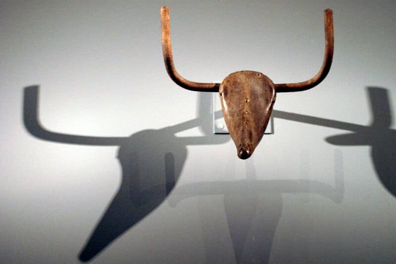

Click here to read more about the artifact

Bull's Head
by Pablo Picasso.
| DC Element name |
Description |
| Title |
Bull's Head (Tête de taureau). |
| Creator |
Pablo Picasso. |
| Subject |
Sculpture. |
| Description |
A found object artwork created with a seat and handlebars of a bicycle. |
| Publisher |
Picasso Museum in Paris. |
| Contributor |
Picasso Museum in Paris. |
| Date |
1942. |
| Type |
Artwork. |
| Format |
Physical object33.5 x 43.5 x 19 cm. |
| Format |
33.5 x 43.5 x 19 cm. |
| Identifier |
https://www.pablopicasso.org/bull-head.jsp. |
| Source |
https://www.pablopicasso.org/bull-head.jsp. |
| Language |
en,fr. |
| Coverage |
France. |
| Rights |
Picasso Museum. |
Bull's Head is a discovered object artwork by Pablo Picasso, made in 1942 from a bicycle seat and handlebar. It is identified as the most famous discovery by Picasso, a simple but "remarkably perfect" metamorphosis.
The sculpture, cataloged as a Bicycle Seat, was exhibited at the Salon d'Automne in Paris in 1944 along with another 78 works. Visitors were surprised by Picasso's new work and a presentation took place during which the Bicycle Seat was one of the pieces removed from the wall.
Bull's Head is described by art critic Eric Gibson as unusual among Picasso's 'transparency' sculptures-the constituent objects contained are not concealed. He states that the sculpture is "a moment of wit and whimsy ...both childlike and highly sophisticated in its simplicity, it stands as an assertion of the transforming power of the human imagination at a time when human values were under siege." The sculpture is in the Paris Picasso Museum's permanent collection.